Review edition · 2 November 2026
Omnibloom user manual
A clear route from Setup to the sofa
This manual covers the staged round-one and round-two interfaces. Screenshots use mock data. Features that need native integration are described as previews, not verified console capabilities. Check the release notes and compatibility matrix before following instructions on a real console.
PDF01 / Meet the suite
One suite, with a clear job for each app.
Omnibloom is the whole download. Omni is the browser. Downloads collects links and runs supported transfers. Files is the USB file helper. Master Control manages controllers. Bloom Core lets installed apps discover each other. Omnibloom Setup installs, updates and repairs the suite from your PC.
Start with the compatibility matrix. Unknown means no result has been recorded; it does not mean supported or unsupported. A useful result names the exact firmware, app build, controller model and connection, date and evidence. Ex-Box 360 is planned for later.
Throughout the suite, move focus with the D-pad and select with A or Cross. B or Circle returns or dismisses the current panel. The visible hint bar reflects your chosen glyph set. A mouse or physical keyboard can be used where supported; the controller should always retain a visible path to every action.
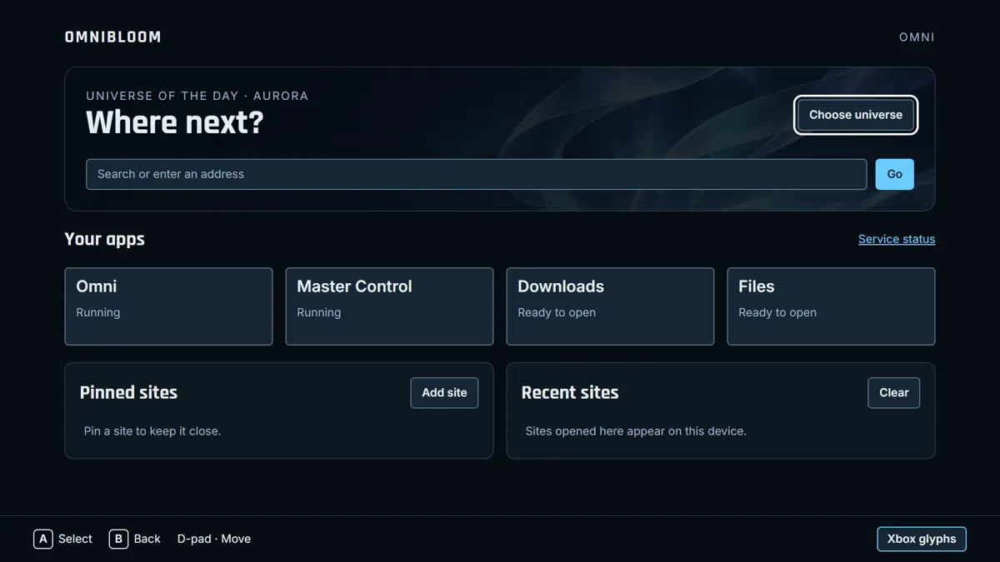
02 / Install, update and repair
Review the checks before copying files.
Open the verified Setup package for the release on your PC. Confirm that your console firmware and prerequisite environment are supported. Connect the PC and console to your trusted home network. Choose Find your PS5 or enter its address, then confirm the selected device.
Read every check. A blocked result must be resolved before installation. Keep its support code rather than guessing a fix. Choose the apps you want; Bloom Core is required while other suite apps remain installed. JDownloader 2 is an optional separate program: review its installer and terms before choosing it.
Start installation and keep both devices available. Wait for the final per-app results; a filled progress bar alone is not proof of success. For a newer release use Update in Installed apps. Use Repair for missing application files. Preserve user data and backups. If interrupted, inspect completed steps before retrying so you do not duplicate work.
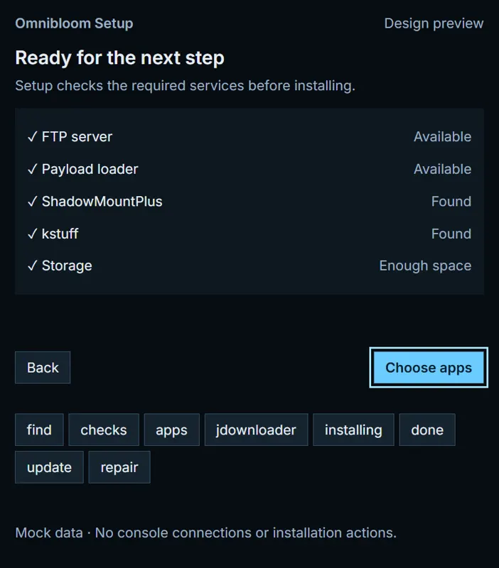
03 / First run and your space
Choose how the suite looks and how it speaks to you.
Open Omni and follow the welcome screens. Review what the suite contains, the controller basics and the privacy explanation. Choose Xbox or PlayStation-style generic button labels, then choose an original universe. The actions stay consistent even when the atmosphere changes.
Aurora, Cosmic, Arcade, Solstice, Metro, Sakura, Abyss, Prism, Atlas and Cassette are original universes. Other original packs may appear in the release. Seasonal accent packs recolour the shared interface without adding another large background. Use reduced motion to keep transitions still.
The boot bloom is a short introduction, not a loading guarantee. Reduced motion uses a still image. Achievement-style notifications such as First download, Controller paired and Universe changed are optional; turn them off in their setting if you prefer a quieter interface. These additions require the release's integration before they appear in normal use.
04 / Search and controller typing
Keep the text and caret in view.
On the start page, select Search or enter an address. The controller keyboard preview opens when a supported field receives focus. Use the D-pad to choose a key and A or Cross to insert it. URL mode offers shortcuts such as www., .com and /. A numbers and symbols layer provides punctuation.
Use L1/R1 to move the caret, Square for backspace, Triangle for space and R2 to submit where shown by the keyboard's hints. Suggestions are choices, never automatic submissions. Review the whole address before opening it. Cancel returns to the field without committing a new value.
Language layouts include accented input and Japanese/Korean entry controls. Full conversion depends on the native input method; a character grid alone is not a complete IME. Password fields must mask text and must not offer history or saved-word suggestions. A physical keyboard should keep working when available.
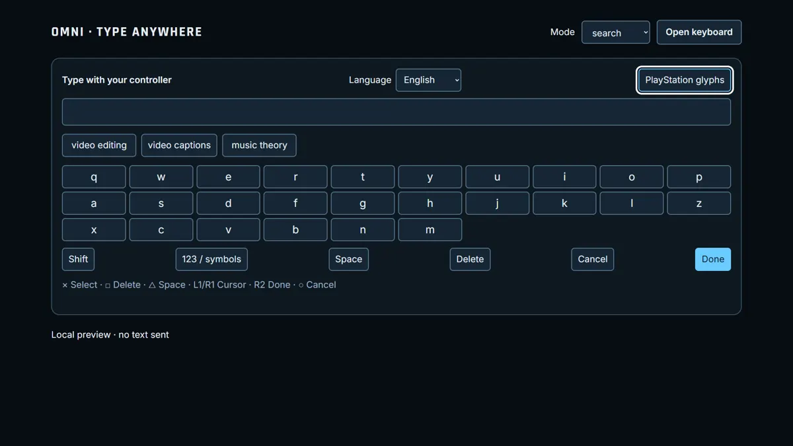
05 / Tabs, bookmarks and history
Find your place without typing the same address again.
Open the tab overview to see open tabs and engine-supplied thumbnails. Select a tab to switch to it. Choose New tab for another start page. Review the close action before removing a tab. Reordering changes the tab sequence; it should not navigate or close a page.
Use Bookmarks to search saved pages and organize them into folders. Give entries short recognizable names. A saved bookmark is an address, not a downloaded copy. Move or edit an entry through the manager and keep focus on the affected item after changes.
History records browsing according to the release's privacy settings. Search it to return to a page. Clearing by time range is a separate action: review the selected range and confirm before deleting. Clearing history does not necessarily remove cookies, downloads, bookmarks or credentials; use the appropriate control for each.
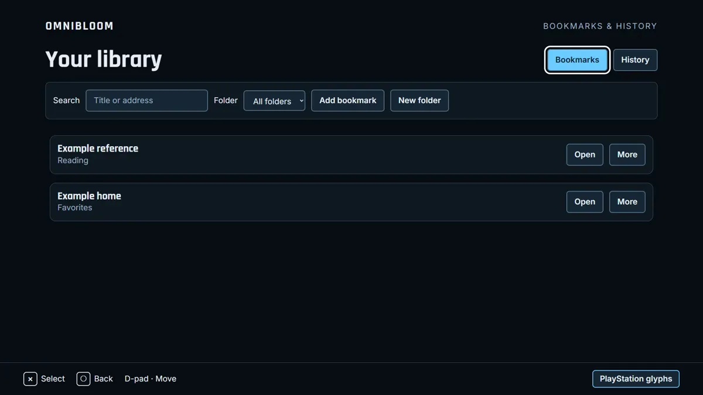
06 / Settings and site permissions
Change a setting with its scope in mind.
The full Settings page groups language, universes, glyphs, motion, gamepad behaviour, pointer style/size/colour, ad blocking, privacy and console protection. Read the current value before changing it. JIT and GPU flags are experimental capabilities, not performance promises; an unsupported setting should remain unavailable.
Open the site panel from the Protected or Allowed pill. Its settings apply to the current site: ad blocking, JavaScript, controller access and site-data clearing. Turning off JavaScript can break a page's controls. Clear site data only after reviewing the site identity; it may sign you out.
Console-block exceptions are sensitive. The block keeps arbitrary websites away from local console services. A verified app record determines permitted pages. Do not disable the block to make an unknown page work. Review the strong warning and ask maintainers to validate a legitimate integration. No preview action silently changes the native policy.
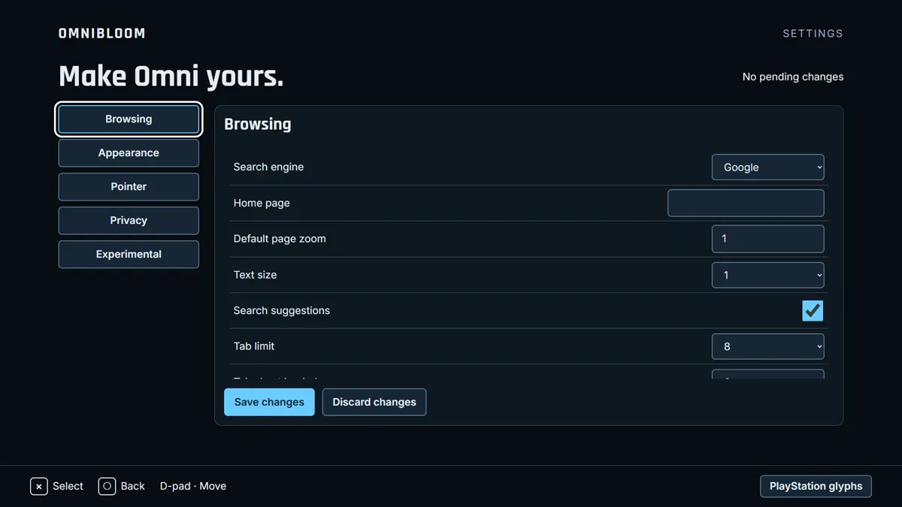
07 / Read, find and make pages comfortable
Choose the view that helps you read.
Reader mode presents an extracted article with TV-friendly typography. Open it on a suitable article, adjust text size and return to the original page when finished. Extraction may omit interactive content, comments or complex layouts; it is not a perfect copy of every site.
Dark pages is a per-site option. The richer treatment may cost more on CPU-rendered WebKit; the cheap filter fallback changes colours more broadly and can affect images. Turn it off for a site if the result is poor. The interface should report the actual mode, not pretend a preview transformed the live page.
Find in page searches the current document. Enter a phrase, move between matches and close the overlay to restore the original focus. Zoom changes the overall page scale; text size targets reading size where supported. Reset returns to the normal value. A reader's text size and a website's zoom are separate settings.
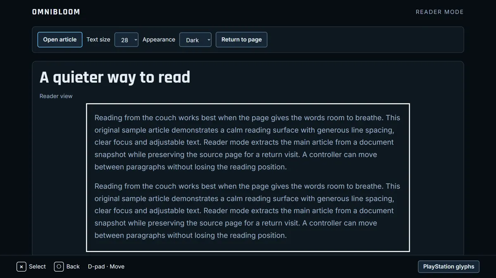
08 / Start and follow a download
Check the link and start deliberately.
Paste a complete HTTP(S) link into Downloads or choose a link found on the current page. A suggestion is unverified until checked. Review the reported type, quality and size; choose the engine and quality, then explicitly start. Demo only simulates progress and saves no media.
The selected engine tries first; the worker may hand an unsupported link to the other engine and report which handled it. JDownloader keeps original files. Protected media is not bypassed. Use a service's supported playback or download option when DRM prevents the requested operation.
Holding the waiting queue affects waiting jobs only, not active transfers. Cancel requests are separate from the worker's final status. If a request times out or the worker restarts, check queue and history before submitting again: the previous request may already have been accepted. Saving a link keeps its address; Use link fills the form without starting a download.
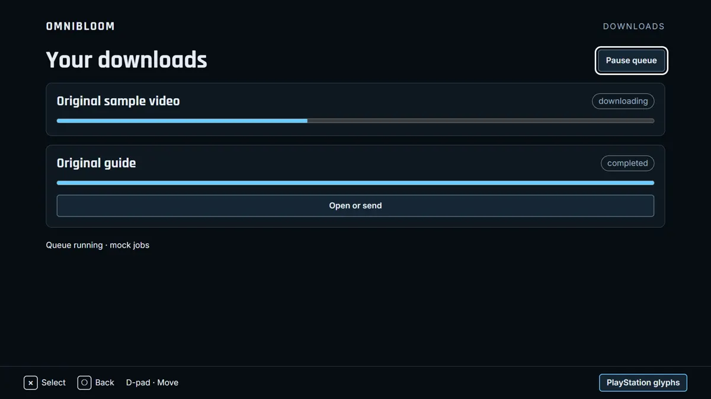
09 / Compact media and download panels
Keep a clear way back to the page.
The compact Downloads panel shows live worker jobs when integrated. It is a view into the same jobs, not a second queue. Pause, Open and Send to USB must be enabled only when the provider reports those capabilities. The current worker may support cancellation and holding waiting jobs without pausing active bytes.
Send to USB requires a destination selected through Files and an explicit confirmation. Do not assume a reported output path proves a file exists. If the drive is missing, keep the job information and offer a useful next step rather than reporting success.
The picture-in-picture preview offers corner placement and D-pad movement with playback controls. The native engine must supply the real player and acknowledge changes. Keep a visible close/return control, and do not let moving the player unexpectedly navigate the underlying page.
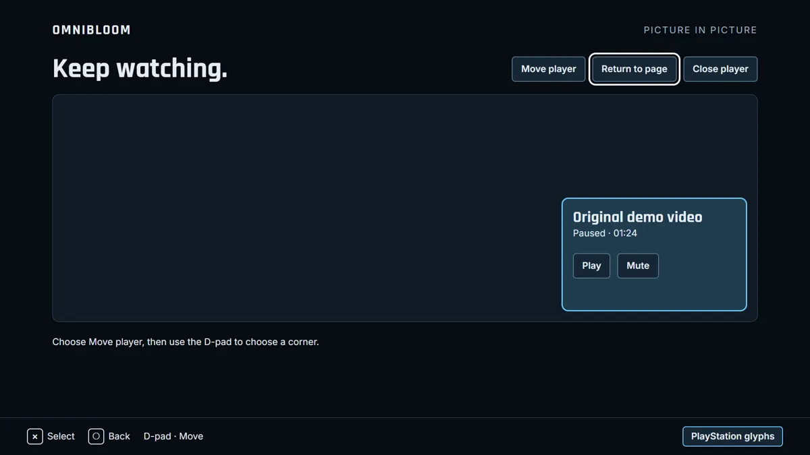
10 / Files and the USB Media Center
Browse local media with the controller.
Open Media Center and choose a USB drive through Files. Browse the available videos, music and photos. Covers and thumbnails are navigation aids, not evidence that a file can play. Select a video to open it through Omni's supported hardware playback path.
Resume uses the position reported by the engine. Choose subtitles and a track only when the file and player support them. For music, review the queue before playing and use explicit add, remove and next actions. For photos, start and stop a slideshow deliberately; reduced motion should avoid unnecessary transitions.
If a drive disconnects, access should stop cleanly and focus should stay on a recovery action. Reconnect and refresh the library. Files requests must remain scoped to the selected drive and allowed operations. The preview uses fixture media; real drive enumeration, playback and saved resume positions require native integration.
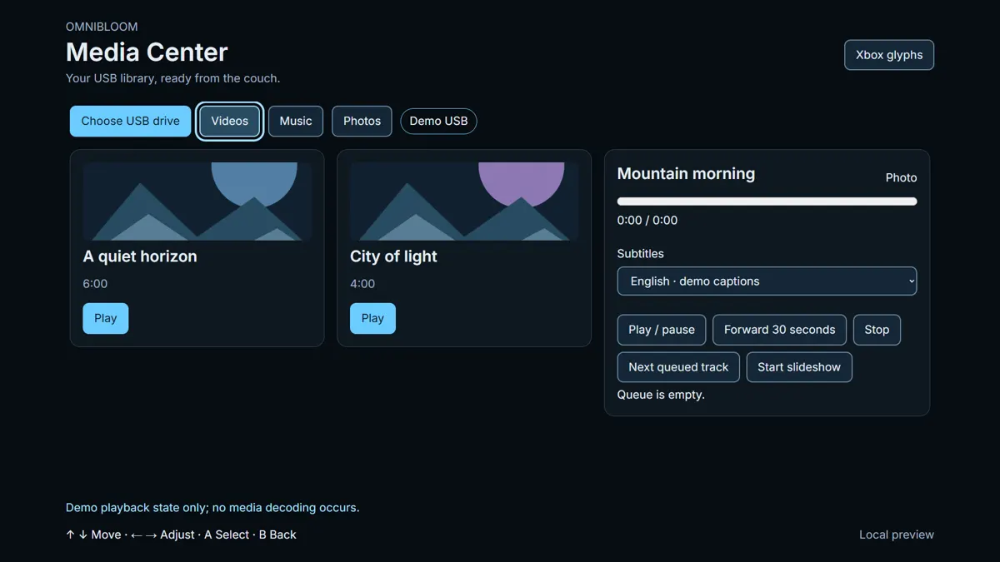
11 / Pair and troubleshoot a controller
Use the exact model's pairing instructions.
Open Master Control, choose Pair and put the intended controller into Bluetooth pairing mode according to its manual. A detected name is not a compatibility guarantee. Once connected, test basic buttons and sticks before changing mappings.
If pairing times out, stop searching and verify pairing mode before trying once more. If the controller is connected elsewhere, disconnect it from that device first. If Bluetooth is busy, wait for the current operation rather than starting several searches. A wrong-mode controller may need its supported USB or Bluetooth mode selected.
The battery and connection widgets show values only when reported. Unknown battery is not zero battery. A stale connection timestamp should be shown as stale. Do not infer charging, wireless strength, motion or touchpad support from the controller brand alone.
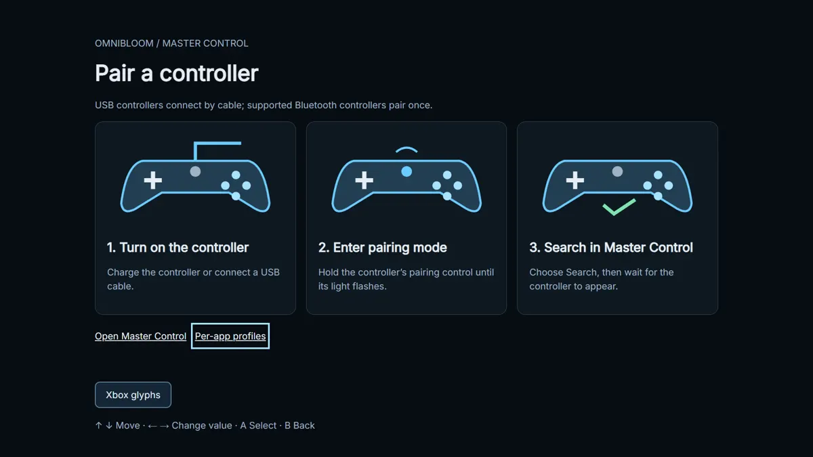
12 / Test inputs and tune response
See what the controller reports before adjusting it.
The tester shows live buttons, sticks and triggers through the Gamepad API where available. Gyro and touchpad indicators require real capability data; unsupported signals stay unavailable. Move one control at a time and check neutral positions and full travel.
In the response editor, choose the stick or trigger you intend to adjust. A deadzone ignores small movement near neutral; too much can make aiming feel delayed. Review the graph and live input together. Change the curve deliberately, test the result, and keep a way to restore the default.
The browser preview can validate the editor and its data format, but cannot prove the native controller applies a curve. Save/apply should name the target and wait for acknowledgement. Record the controller model and connection if a neutral reading drifts or a trigger never reaches its endpoint.
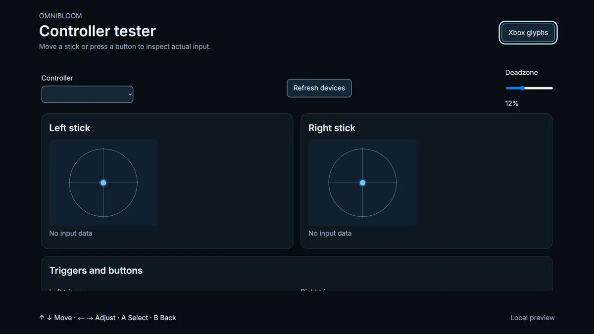
13 / Profiles, remaps and layers
Review the target before applying changes.
Per-app and per-game profiles keep different layouts separate. Select the intended target, review the changed mappings and apply explicitly. Show friendly control names on the main screen; raw identifiers belong in Details. An unexplained chip is not a useful status.
Import accepts a versioned profile document. Validate its schema and inspect the target and changes before applying. Import never silently activates a profile. Export preserves the version and mapping data for review or backup, without secrets or personal paths.
Turbo and remap layers are for single-player and personal use. Choose the trigger and affected controls, review the timing and layer behaviour, then save. Make the active layer visible and provide an immediate way to disable it. Native acknowledgement, persistence and game-specific policy remain integration responsibilities.
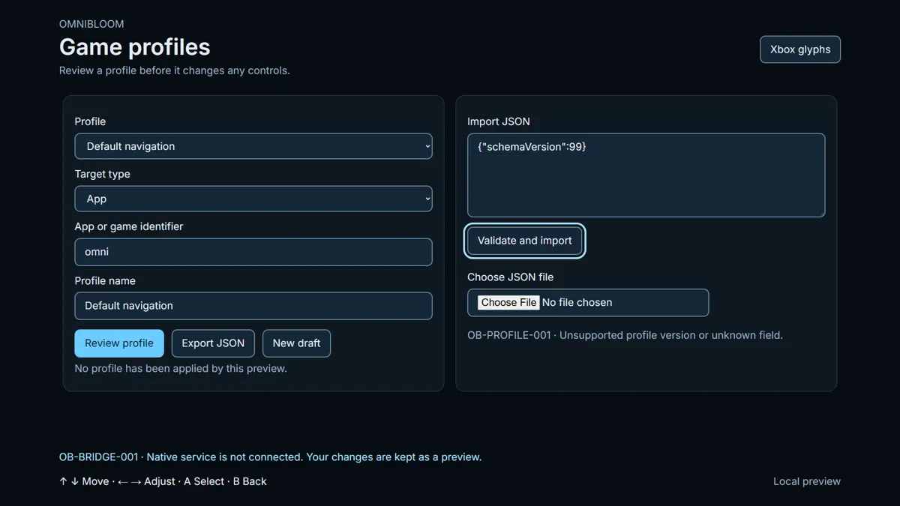
14 / Passwords and sensitive data
Choose when to save and when to fill.
The password UI preview includes a save prompt, vault list, autofill picker and settings. A save request must identify the site and username. Decline or dismiss without writing a secret. The vault list should not expose passwords in ordinary browsing.
For autofill, choose the intended entry and verify the origin. A page with a similar-looking name is not the same site. Reveal or copy actions need deliberate input and an appropriate lock state. The preview uses dummy credentials only.
Storage encryption, unlock policy, deletion and native hooks must be verified in the released implementation. Do not infer encryption from a lock icon. Do not put real passwords into mock pages, screenshots, tutorial footage or support exports.
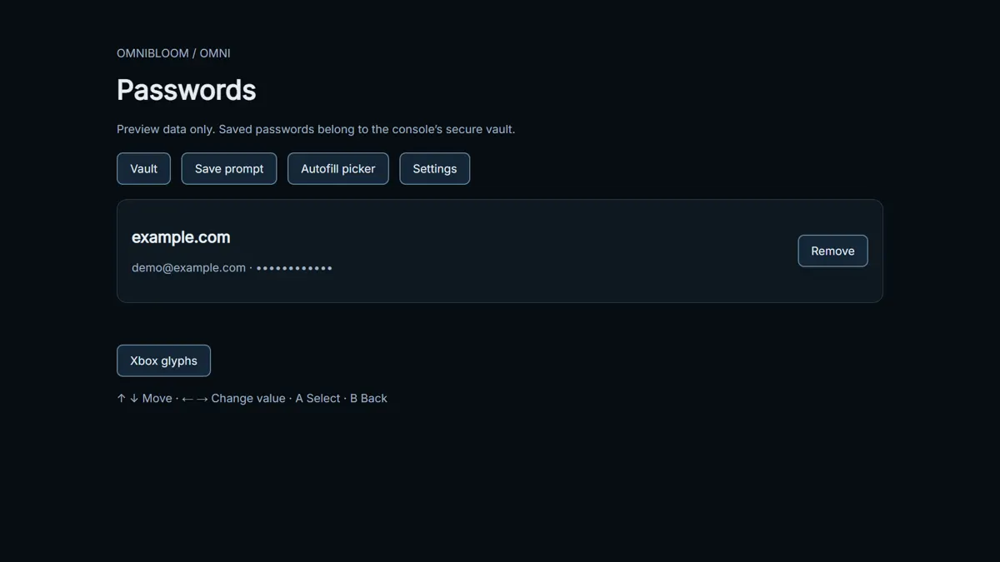
15 / Send a link from a phone
A design proposal, off by default.
Phone link sharing is a design and specification, not a shipped service promise. The proposed TV screen shows a short-lived pairing code, and the phone opens a small page on the home network. Confirm the target console and pair before sending a URL.
The design must be off by default, rate-limited and time-limited. Pairing codes should expire and not grant permanent access. Accept only validated HTTP(S) URLs; a phone must not gain file, installation or arbitrary command privileges.
A received link should be shown for review before opening. Reject stale sessions and duplicate submissions cleanly. The release owner decides whether to implement the LAN service after reviewing the threat model. Never expose the service to the public internet as a shortcut.
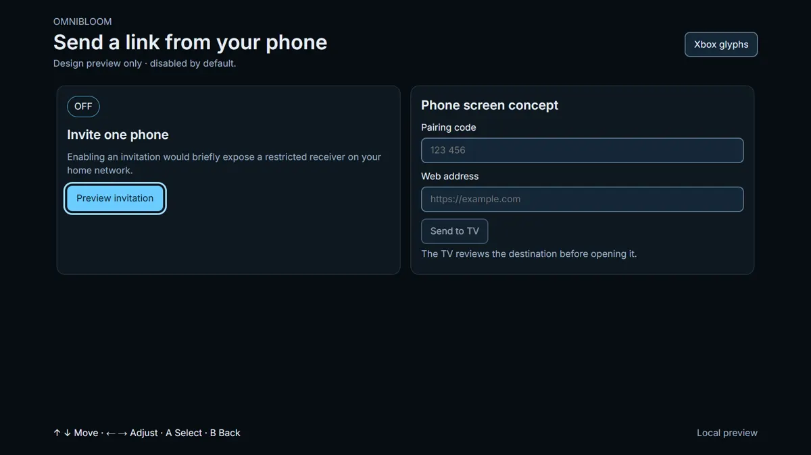
16 / Recovery and support exports
Keep the next step clear and the evidence private.
Different errors need different responses. No connection, a blocked local page, an untrusted certificate, protected content and an app that is not running must not share a generic Retry loop. Read the friendly message, next step and support code.
Support export collects only the reviewed categories of versions, logs and receipts. Preview the contents before saving the ZIP. Redaction should remove IP and MAC addresses, tokens, usernames and personal paths. Review the result yourself before sharing; automated redaction is a safeguard, not proof that every secret was found.
Include exact app build and firmware, controller model/connection, expected and actual behaviour and reproducible steps. Use private vulnerability reporting for security issues, not a public bug with exploit details. Do not publish credentials or private URLs. Compatibility reports should link redacted evidence and a test date.
Back to contents17 / Privacy, accessibility and credits
Know what stays local and what reaches a service.
Bloom Core discovery is local, but browsing is not anonymous. Websites and download services receive requests and apply their own policies. History, saved links and credentials may remain on the device; consult the release's verified storage, encryption and deletion behaviour. Web pages must never receive Bloom Core's token.
Use reduced motion, readable text size, visible focus and the glyph set you recognize. Caption styling and language depend on the player and media. Report clipped text with resolution and a redacted screenshot. The seven translated documentation editions are marked for native-speaker review before publication.
Thanks to GhostControl/StonedModder, NikoBellikJR31, PadBridge, mateo-cogeanu's Java port, WebKit, yt-dlp and JDownloader 2. Preserve their exact licences and notices. Inter, Rajdhani and the bundled CJK fonts are OFL. The flower is the user's original branding. Omnibloom follows the project's GPL-3.0-or-later standard; component notices remain separate.
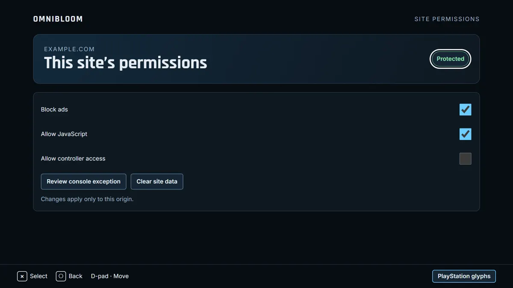